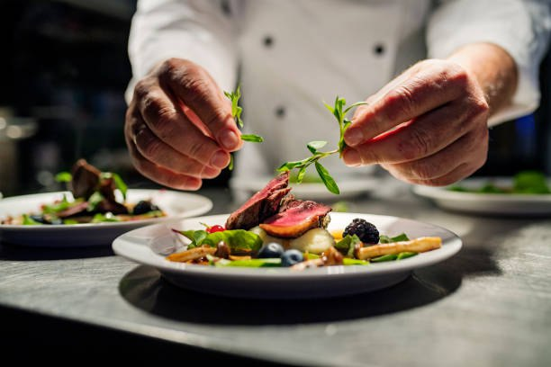

Developers
Welcome to Recipe sharing website! We’re passionate about making cooking fun, and accessible for everyone. Our easy-to-follow recipes are designed to inspire, whether you’re whipping up a quick meal or trying something new. Each recipe is tested to ensure it's delicious and achievable with everyday ingredients. Join our community of food lovers and let’s make cooking an enjoyable part of your life!
Read more